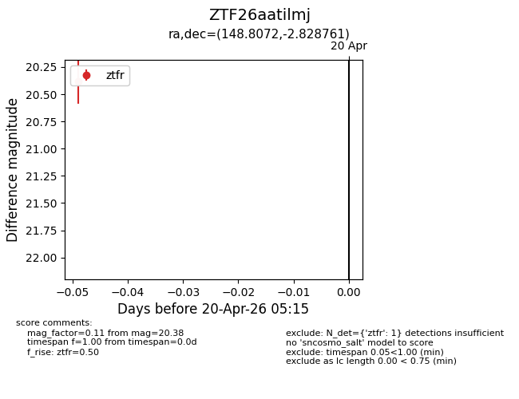
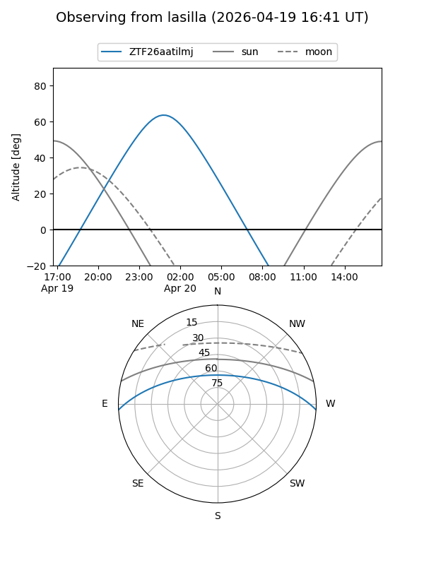
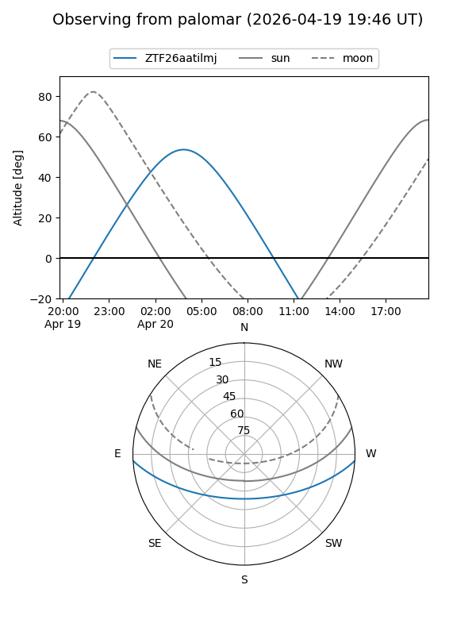

ZTF26aatilmj
Target ZTF26aatilmj at 2026-04-20 05:25
Aliases and brokers:
FINK: link
Lasair: link
ALeRCE: link
alt names
ZTF26aatilmj (ztf,fink_ztf)
Coordinates:
equatorial (ra, dec) = 148.8072,-2.82876
equatorial (HMS+DMS) = 09:55:13.73,-02:49:43.54
galactic (l, b) = (241.0595,+38.05058)
Flags:
Photometry:
last ztfr=20.38
1 ztfr detections
Lightcurve

Visibility


Additional plots